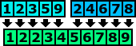
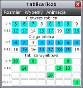

Funkcja scalająca uporządkowane tablice

W poprzednich lekcjach zajęliśmy się problemem sortowania, poznaliśmy trzy proste
metody porządkowania. Niestety omówione metody sortując n-elementowy ciąg
wykonywały około n2 porównań. W następnej lekcji poznamy znacznie
szybszy sposób sortowania. Algorytm, o którym mowa nosi nazwę sortowania przez
scalanie (ang. mergesort). Jednak zanim przejdziemy do omawiania tego porządkowania
musimy zapoznać się z podstawową funkcją wykorzystywaną w tym algorytmie – z funkcją
scal (ang. merge). Funkcja scal przyjmuje dwie posortowanane tablice liczb
i scala je w jedną uporządkowaną tablicę. W tej lekcji zajmiemy się implementacją tej funkcji.

Podobnie jak w poprzednich lekcjach twój algorytm powinien działać
na trzech specjalnych tablicach wyświetlonych w osobnym oknie.
Tablice na górze są już wypełnione i posortowane. Możesz założyć, że te tablice nie są puste,
tzn. mają przynajmniej jeden element. Natomiast trzecia tablica (dolna) jest tablicą wynikową.
Twoja funkcja powinna wypełnić tę tablicę przepisując zawartość dwóch górnych tabel.
Po zakończeniu przepisywania wartości w tablicy wynikowej powinny być posortowane niemalejąco.
Aby twoja funkcja mogła działać na wyświetlonych tablicach powinieneś skorzystać
z dwóch funkcji specjalnych: „int porownaj(idx1, idx2)” oraz
„void przenies(idxSkad, tabSkad, idxDokad)”. Funkcja porównaj służy do porównywania liczb
znajdujących się w dwóch górnych tablicach. Natomiast funkcja przenieś służy
do przenoszenia elementów z górnych tablic do tablicy wynikowej.
Więcej o funkcjach speclanych można dowiedzieć się z zakładki „funkcje specjalne”.
Zadaniem w tej lekcji jest zaimplementowanie funkcji „void scal(n, m)”, gdzie
jako parametry funkcja przyjmuje rozmiary dwóch górnych tablic. Funkcja powinna
scalać dwie tablice w jedną zgodnie z założeniami poczynionymi w powyższym akapicie.
W razie kłopotów z implementacją tej funkcji możesz skorzystać z licznych wskazówek.
Po zakończeniu implementacji porównaj swoje rozwiązanie z rozwiązaniem wzorcowym,
a następnie przeczytaj podsumowanie.